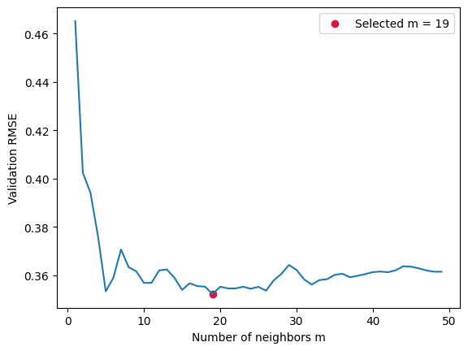

These materials were developed with assistance from AI tools. All content has been reviewed and edited by the instructor, who takes final responsibility for its accuracy, clarity, and appropriateness for the course. Students should treat these materials as instructor-reviewed course content while applying the same critical judgment they would use with any technical material. Please report any suspected errors or unclear explanations to ghunt@wm.edu.
Nearest-neighbor methods predict from nearby training observations: average their responses for regression, or have their labels vote for classification. We will first derive the population targets that these local averages estimate.
8.1 Population Risk and the Optimal Score Function
Recall the score/action framework \[
f(x)=a(s(x)).
\] The score function \(s\) produces the numerical quantity used by the action \(a\) to make a prediction. In regression, \(a\) is the identity. In classification, \(a\) selects the class with the largest score.
For a new observation \((X,Y)\sim P\), the population risk of a score function \(s\) is \[
R(s)=\mathbb E[\ell(Y,s(X))].
\] The population-optimal score function is \[
s^*=\arg\min_s R(s).
\]
8.2 Pointwise Minimization
At a fixed input \(x\), define the conditional risk of proposing the score \(t\): \[
L_x(t)=\mathbb E[\ell(Y,t)\mid X=x].
\] The law of total expectation rewrites the overall risk as \[
R(s)=\mathbb E_X\big[L_X(s(X))\big].
\] This says that overall risk averages the conditional risk incurred at each possible input.
The important additional assumption is that we are minimizing over all possible score functions. Then the values \(s(x)\) and \(s(x')\) may be chosen independently when \(x\ne x'\).
To see the logic concretely, suppose \(X\) takes values \(x_1,\ldots,x_J\), with \(p_j=\mathbb P(X=x_j)\). Then \[
R(s)=\sum_{j=1}^J p_j L_{x_j}(s(x_j)) = p_1 L_{x_1}(s(x_1)) + p_2 L_{x_2}(s(x_2)) + \cdots p_J L_{x_J}(s(x_J))
\] The value \(s(x_j)\) occurs only in the \(j\)th term. Changing \(s(x_j)\) cannot change any other term, and all \(p_j\) are nonnegative. We therefore make the whole sum as small as possible by choosing each \(s(x_j)\) to minimize its own term: \[
s^*(x_j)= \arg\min_t L_{x_j}(t).
\] For continuous \(X\), the sum becomes an integral over all \(x\), but the reasoning is the same. At each input, \[
\boxed{s^*(x)=\arg\min_t L_{x_j}(t)=\arg\min_t\mathbb E[\ell(Y,t)\mid X=x].}
\]
This pointwise argument would not apply directly if we restricted \(s\) to a linked family such as \(s(x)=w^\top x\). Changing \(w\) changes the scores at many inputs at once, so improving the conditional risk at one input may worsen it elsewhere.
8.3 Regression with Squared Loss
For regression, the score itself is the prediction, and squared loss is \[
\ell(y,t)=(y-t)^2.
\] Fix an input \(x\). The proposed prediction \(t\) is now an ordinary real number, so \[
s^*(x)=\arg\min_{t\in\mathbb R}\mathbb E[(Y-t)^2\mid X=x].
\] Expanding the square and taking the conditional expectation gives \[
\begin{aligned}
L_x(t)
&=\mathbb E[Y^2-2tY+t^2\mid X=x]\\
&=\mathbb E[Y^2\mid X=x]-2t\mathbb E[Y\mid X=x]+t^2.
\end{aligned}
\] Here the conditional moments are constants with respect to \(t\). Therefore \[
L_x'(t)=-2\mathbb E[Y\mid X=x]+2t.
\] Setting the derivative equal to zero gives \[
t=\mathbb E[Y\mid X=x].
\] Because \(L_x''(t)=2>0\), this critical point is the unique minimum. Hence \[
\boxed{s^*(x)=\mathbb E[Y\mid X=x].}
\]
8.4 From the Conditional Mean to Nearest-Neighbor Regression
The result \[
s^*(x)=\mu(x)=\mathbb E[Y\mid X=x]
\] identifies the population target, but it does not yet give us a fitted predictor: we do not know \(P\), so we do not know \(\mu(x)\).
Suppose we had many training observations whose input was exactly \(x\). Their responses would come from the conditional distribution \(Y\mid X=x\), so their average would estimate \(\mu(x)\). With continuous features, however, exact matches are rare. We usually have no observations satisfying \(x_n=x\).
8.4.1 The Local Approximation
Nearest-neighbor regression replaces exact matches with nearby inputs. Its working assumption is that the conditional mean changes gradually in the chosen distance: when \(x_n\) is close to \(x\), \[
\mu(x_n)\approx\mu(x).
\] Alternatively, we are approximating \[
\mathbb E[Y\mid X=x] \approx \text{ mean of $x_n$ near $x$.}
\]
This method is conventionally called \(k\)-nearest neighbors, or KNN, which explains software names such as KNeighborsRegressor. We instead use \(m\) for the number of neighbors, leaving \(K\) for the number of classes. Let \(\mathcal N_m(x)\) contain the indices of the \(m\) nearest training inputs to \(x\). The fitted \(m\)-nearest-neighbor regression rule is \[
\boxed{\hat s_m(x)=\frac1m\sum_{n\in\mathcal N_m(x)}y_n,
\qquad \hat f_m(x)=\hat s_m(x).}
\]
For a query \(x\), the fitted procedure:
computes its distance to every training input;
selects the \(m\) nearest, using a fixed rule for distance ties;
averages their responses.
The approximation involves a tradeoff. A very small \(m\) keeps the neighborhood local but averages little noise. A large \(m\) averages more responses but may include points whose conditional means differ substantially from \(\mu(x)\). Distance, feature scaling, and \(m\) together determine what “local” means.
Linear regression and nearest-neighbor regression estimate the same conditional mean. Linear regression uses a global form such as \(w^\top x\); nearest-neighbor regression uses a local average. Its stored training observations are part of the fitted predictor.
8.5 Regression Example: Flexibility
The data below follow \(Y=\sin(X)+\varepsilon\). We keep the same observations while changing \(m\).
Smaller \(m\) means greater flexibility, reversing the direction we saw for polynomial degree.
At \(m=1\), predictions follow individual responses, including their noise. With distinct training inputs, training error is zero.
Moderate \(m\) averages away some noise while retaining local structure.
At \(m=N\), every prediction is the overall training-response mean: local structure disappears.
A larger neighborhood can reduce sensitivity to individual observations, but may average together inputs with different conditional means.
8.5.1 Selecting \(m\): Train, Validation, and Test
Use one three-way split: fit candidates on training data, choose \(m\) by validation RMSE, refit on training plus validation, then evaluate on the test set. This is the same model-building procedure as in the previous lecture.
Show code
rng = np.random.default_rng(70)X = rng.uniform(0, 2*np.pi, (300, 1))y = np.sin(X[:, 0]) + rng.normal(0, 0.3, len(X))X_trainval, X_test, y_trainval, y_test = train_test_split( X, y, test_size=0.2, random_state=70)X_train, X_val, y_train, y_val = train_test_split( X_trainval, y_trainval, test_size=0.25, random_state=71)m_grid = np.arange(1, 50)val_rmse = []for m in m_grid: model = KNeighborsRegressor(n_neighbors=int(m)).fit(X_train, y_train) val_rmse.append(np.sqrt(mean_squared_error(y_val, model.predict(X_val))))best_m =int(m_grid[np.argmin(val_rmse)])plt.plot(m_grid, val_rmse)plt.scatter(best_m, min(val_rmse), color='crimson', label=f'Selected m = {best_m}')plt.xlabel('Number of neighbors m')plt.ylabel('Validation RMSE')plt.legend()plt.show()final_model = KNeighborsRegressor(n_neighbors=best_m).fit(X_trainval, y_trainval)test_rmse = np.sqrt(mean_squared_error(y_test, final_model.predict(X_test)))print(f'Selected m: {best_m}; final test RMSE: {test_rmse:.3f}')

Selected m: 19; final test RMSE: 0.275
The winning validation score helped choose \(m\), so it is not an independent final evaluation. The test score evaluates the refitted output of the entire selection procedure. CV could supply the candidate performance estimates instead; once used to select \(m\), the winning CV score has the same selection issue.
8.6 Classification and the Bayes Decision
Now suppose \(Y\in\{1,\ldots,K\}\), where \(K\) is the number of classes. The score function produces a vector \[
s(x)=(s_1(x),\ldots,s_K(x))^\top,
\] and the action predicts the class with the largest score: \[
a(s(x))=\arg\max_{1\le c\le K}s_c(x).
\]
Under zero-one loss, \[
\ell(y,s(x))=\mathbf1\{y\ne a(s(x))\}.
\] At a fixed input \(x\), the conditional risk of a proposed score vector \(t\) is \[
\begin{aligned}
L_x(t)
&=\mathbb E[\mathbf1\{Y\ne a(t)\}\mid X=x]\\
&=\mathbb P(Y\ne a(t)\mid X=x)\\
&=1-\mathbb P(Y=a(t)\mid X=x).
\end{aligned}
\] The loss depends on \(t\) only through the class \(a(t)\) that it selects. Therefore minimizing conditional error is equivalent to choosing a class with the largest conditional probability: \[
\boxed{f^*(x)=\arg\max_{1\le c\le K}\mathbb P(Y=c\mid X=x).}
\] This is the Bayes classifier. Unlike squared-loss regression, the optimal score vector is not unique under zero-one loss: any scores whose largest component identifies a most probable class give the same decision. One convenient population score is the vector of conditional class probabilities \[
s_c^*(x)=\eta_c(x)=\mathbb P(Y=c\mid X=x).
\]
8.6.1 Nearest-Neighbor Classification
The probabilities \(\eta_c(x)\) are unknown. As in regression, the nearest-neighbor method assumes that nearby inputs have similar conditional behavior: \[
x_n\approx x
\quad\Longrightarrow\quad
\eta_c(x_n)\approx\eta_c(x).
\] For class \(c\), the indicator \(\mathbf1\{Y=c\}\) has conditional mean \[
\mathbb E[\mathbf1\{Y=c\}\mid X=x]=\mathbb P(Y=c\mid X=x)=\eta_c(x).
\] We can therefore estimate \(\eta_c(x)\) by averaging these indicators among the \(m\) nearest neighbors: \[
\hat s_{m,c}(x)=\hat\eta_{m,c}(x)
=\frac1m\sum_{n\in\mathcal N_m(x)}\mathbf1\{y_n=c\}.
\] This is simply the fraction of the neighbors belonging to class \(c\). The estimated probabilities are nonnegative and sum to one. Applying the usual action gives \[
\boxed{
\hat f_m(x)=a(\hat s_m(x))
=\arg\max_{1\le c\le K}\hat\eta_{m,c}(x).
}
\] Thus nearest-neighbor classification estimates the conditional class probabilities locally and predicts the most common neighbor label. A fixed rule is still needed if the class counts tie.
Multiclass logistic regression estimates probabilities through linear scores and softmax. Nearest-neighbor classification estimates probabilities by local class proportions. Both ultimately select the class with the largest estimated probability, but they obtain those estimates in different ways.
8.7 Penguins: Boundaries and Distance
Use bill length and flipper length to predict species. The plots illustrate fitted decision regions using all displayed observations; they are not performance estimates.
Euclidean distance is \[
d(x,x')=\sqrt{\sum_{j=1}^D(x_j-x'_j)^2}.
\] A feature with a larger numerical scale can dominate this sum. Standardization changes the distance so that features are measured in standard-deviation units. This can be useful, but is a modeling choice rather than a guarantee of better predictions. During evaluation, learn the scaler from training data only.
Change \(m\) and compare both panels. Decision regions can be nonconvex or disconnected, and their shapes depend on the distance. At \(m=N\), every input receives the global majority label. Scaling changes which observations are neighbors even when \(m\) stays fixed.
8.8 MNIST: Neighbors Are Images
MNIST contains grayscale images of handwritten digits labeled 0–9. Each image is \(28\times28\) pixels; flattening it produces an input vector \(x\in\mathbb R^{784}\). The label is the digit shown.
We use a reproducible subset for speed and one train/test split with a fixed \(m=5\). First look at the images, then inspect the actual neighbors used for a prediction.
All features are pixel intensities on the same scale. Dividing every pixel by 255 changes distance units but preserves neighbor ordering. We use this simple pixel distance without standardizing each pixel separately.
Pixel distance compares corresponding locations. A small shift in handwriting can change many pixel differences even when the digit is still recognizable. Inspect the neighbors and mistakes: does numerical closeness match what you see?
These test results describe the fixed procedure with \(m=5\) on this subset. If we use the mistakes to change features or choose \(m\), those observations begin to influence model building and a fresh final evaluation is needed.